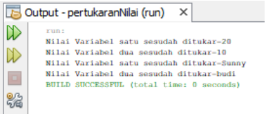

Soal 1
Buatlah program dengan 2 class, dengan class PertukaranNilaiData.java menggunakan constructor dan SET beserta GET dengan Variable sebagai berikut :
- private Object dataSatu
- private Object dataDua
- private Object temp
Buat method yang isi nya variabel yang ditukarkan sebagai berikut :
- temp = dataSatu
- dataSatu = dataDua
- dataDua = temp
Dan buat Class tester sebagai main
Jawaban :
Code PertukaranNilaiData.java
public class PertukaranNilai {
private Object dataSatu;
private Object dataDua;
private Object temp;
public PertukaranNilai(){
System.out.println("Pertukaran Nilai");
}
public void DataSatu(Object value){
this.dataSatu = value;
}
public void DataDua(Object value){
this.dataDua = value;
}
public void result(){
temp = dataSatu;
dataSatu = dataDua;
dataDua = temp;
System.out.println("Nilai variabel satu sesudah ditukar " + dataSatu);
System.out.println("Nilai variabel dua sesudah ditukar = " + dataDua);
}
}
class Tester {
public static void main(String[] args) {
PertukaranNilai nilaiSaya = new PertukaranNilai();
nilaiSaya.DataSatu(10);
nilaiSaya.DataDua(20);
nilaiSaya.result();
nilaiSaya.DataSatu("Budi");
nilaiSaya.DataDua("Sunny");
nilaiSaya.result();
}
}